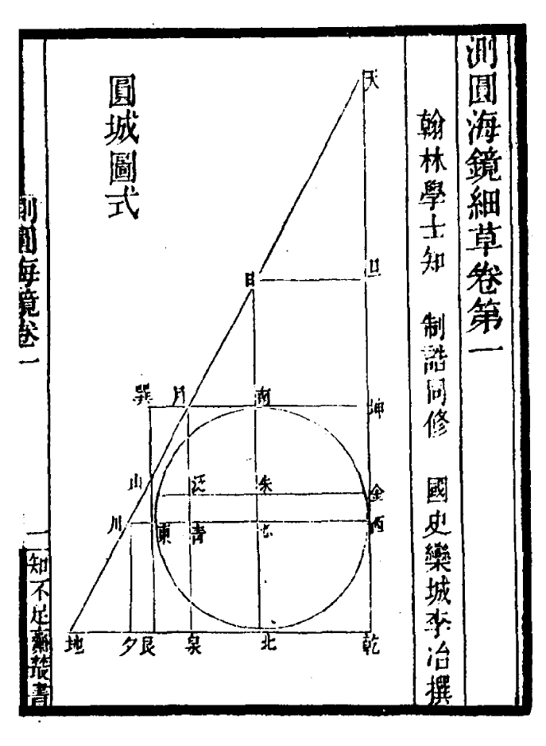
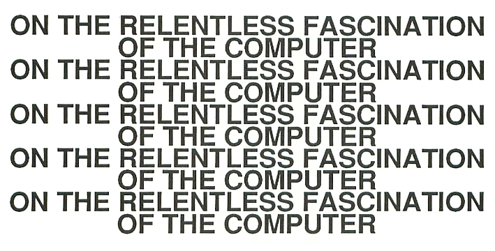
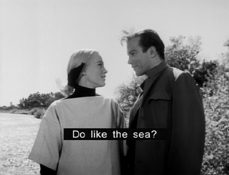
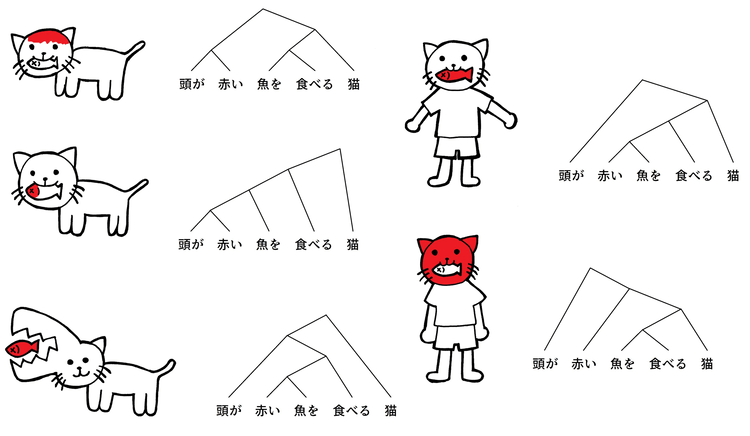

Research is what I'm doing when I don't know what I'm doing.
Wernher von Braun
Answers to commonly asked questions about research.
What are the most important concepts that you impart in your works?
A lot of my work deal with foreignness and adaptiveness, some of the most
romantic ideas that one will find in my work is that of explorers wandering the
remains of a long extinguished civilization, and trying to make sense of
it.
Why do you release free software?
Being away from accessible internet connectivity, the most practical mean for
us to develop and release projects is via the Bazaar Model, where the code is often stewarded by
others while we are away, and in the eventuality that we do not come back from a trip, we trust that our work would fall into the commons.
Indebted to all the gracious help we have received over the past, we pay it forward by funding other parties interested in retracing our steps. At this time, the work of Hundred Rabbits is supported primarily by donations, and is entirely open and freely accessible.
Why do you release open-source software?
Being incapable of sitting through a class back in high-school, most of the
learning that I was able to do was from looking at other people's sources and
trying to make sense of the way they think and understand the reasons for
solutioning in that particular way. For an ecosystem of tools to be truly resilient, individuals must be able to
repair, maintain and inspect the software that they
use.
Why is journaling important to you?
I keep records of everything I make, and everything I consume. The idea is to
better understand my creative patterns, and to predict changes in mood and
interest. Ultimately, the goal is to plan more efficiently, to spend my time
with more efficacy and to work less.
A cone amid the polar waste.
Shea Zellweger designed the Flipstick alphabet to encodes the logic relationships of
the binary table, it uses a special set of letter-shapes to symbolize 16 binary connectives. These letter-shapes are subjected to a system of flips, rotations and counterchanges.
Roman numerals are loaded with difficulties because they do not lay bare, in any transparent way, the interrelations among the number values. Notice, instead, that we use Arabic numerals when we build a multiplication table. When modern logic uses "dot, vee, horseshoe" to express "and, or, if" it also does not lay bare the rich web of interrelations that occupy the 16 connectives taken as a total system. Unfortunately, symbolic logic is miles away from coming up with its own multiplication table.
We have such high standards for number symbols, but it is odd indeed that the standards used for logic symbols are still so much lower.
And(d)
TT
T
TF
F
FT
F
FF
F
(A, B) is for any two atomic sentences. (?) is for Negation (N) for its Abscence (O). Substitute letter-shapes on the Flipstick for the asterisk. Letter-shapes posses combinations of stems that act on (TT, TF, FF, Ft); clockwise from the upper right. Each stem stands for (T)rue. (o) is FFFF; (d) is TFFF; (q) is FTFF; (p) is FFTF; (b) is FFFT; (h) is FTTT; (x) is TTTT; etc. So, (A o B) is (A contradiction B); (A x B) is (A tautology B); (A d B) is (A and B); etc.
T
x
OR
ɥ
NAND
h
XOR
z
->
0xc
q
u
NOT p
ↄ
NOT <-
b
<-
0xe
p
c
NOT q
n
NOT ->
q
<->
s
AND
d
NOR
p
F
o
NA Flip the Flipstick from left to right.
NB Flip the Flipstick from top to bottom.
NA,NB Rotate the Flipstick 180 degrees.
N* Find counterchange mate symmetrically across the center of the Flipstick..
Arithmetics is the study of numbers, especially the properties of the traditional operations on them.
Some mathematicians are of the opinion that the doing of mathematics is closer to discovery than invention.
Don't interrupt, Bruno said as we came in. I'm counting the Pigs in the field!
How many are there? I enquired.
About a thousand and four, said Bruno.
You mean about a thousand, Sylvie corrected him. There's no good saying "and four": you can't be sure about the four!
And you're as wrong as ever! Bruno exclaimed triumphantly. It's just the four I can be sure about; cause they're here, grubbing under the window! It is the thousand I isn't pruffickly sure about
Lewis Carroll (Sylvie and Bruno Concluded)
The number 210, a primorial, is the smallest number divisible by the smallest 4 primes (2, 3, 5, 7) and has 16 divisors (1, 2, 3, 5, 6, 7, 10, 14, 15, 21, 30, 35, 42, 70, 105, 210).
Geometry is the study of space in relation with distance, shape, size, and position of figures.
A circle is defined as a set of points equidistant from a central point, this distance is the circle's radius.

Trig Function Definitions
Function
Definition
sin(α)
opposite / hypotenuse
cos(α)
adjacent / hypotenuse
tan(α)
opposite / adjacent
Solving Right Triangles
Know
Want
Compute
α, adjacent
opposite
= adjacent * tan(α)
hypotenuse
= adjacent / cos(α)
α, opposite
adjacent
= opposite / tan(α)
hypotenuse
= opposite / sin(α)
α, hypotenuse
adjacent
= hypotenuse * cos(α)
opposite
= hypotenuse * sin(α)
Circle
Distance
(x1-x0)²+(y1-x0)²=r² If the circle is centred at the origin (0, 0), then the equation simplifies to x²+y²=r²
The slope of the first line is m1=(y2−y1)/(x2−x1) and the slope of the second is m2=(y4−y3)/(x4−x3). The lines are parallel if and only if m1=m2.
Let'?'s say we are given the center point of the circle and its radius. We can now create a loop which iterates from Center.x-Radius to Center.x+Radius or maybe even downwards from Center.x+Radius to Center.x-Radius. Now we have one point on the radius which is the center of the circle and one point which we have the X to, which is located on the circumference. We can then calculate the Y position of this point using the distance formula as in:
cos(x) = 1 - (x^2/2!) + (x^4/4!)... (An even function)
sin(x) = x -(x^3/3!) + (x^5/5!).... (An odd function)
add both series together but keep all signs positive and you have
e^x = 1 + x+ (x^2/2!) + (x^3/3!).....
So e^ipi + 1 =0
Tau is the Circle Constant.
Degree Minute Position to Decimal Position
d = M.m / 60
Decimal Degrees = Degrees + .d
Example:
To convert 124° 44.740, a DMS coordinate, to DD.
44.740(m.m) / 60 = 0.74566667
124(degrees) + 0.74566667(.d) = 124.0.74566667
And so 124° 44.740 is 124.0.74566667 in Decimal Degrees.
To make a 1 litre container from a ruler: Fill 10cm x 10cm x 10cm with water.
To make a 1 litre container from 1000 grams: Fill a container with room temperature water, when then container holds exactly 1000 grams(1 kg) of water, it is exactly 1 litre.
To make a 1 gram unit from 1cm: Fill 1cm x 1cm x 1cm with water.
To make a 1 meter from a pendulum: Time 10 full back-and-forth swings, if it takes less than 20 seconds, your string is too short, if it takes more than 20 seconds, your string is too long. A string with a length of exactly 1 metre has a period(one full swing back and forth) of almost exactly 2 seconds.
To make a 10.5cm ruler from a sheet of A4 paper: A4 paper is exactly 21cm wide. Fold it in half perfectly width-wise, the resulting width is 10.5cm.
Submerge an object you know is exactly 1 kg it in a straight-sided container, mark where the water level started and where it ended. The space between those two marks is a 1 litre gauge for that specific container.
The head of an M10 hex bolt is 1.7cm across.
The standard height for a doorknob or handle is 90cm.
A standard medium-sized shirt button is usually 13mm
A LP record spins at 33 1/3 revolutions per minute, it takes exactly 1.8 seconds for one full rotation.
If you drop a rock and it takes exactly 0.45 seconds to hit the ground, it has fallen exactly 1 metre.
Water boils at 100'C and freezes at 0'C.
A sheet of standard 80gsm A4 paper weighs is 5g.
The long side of A4 paper is 297mm(roughly 30cm.
The time in seconds between a lightning and the thunder, divided by 3 is the distance in kilometers.
Strictly speaking, one immortal monkey would be sufficient.
A beauty cold and austere, like that of sculpture, without appeal to any part
of our weaker nature, without the gorgeous trappings of painting or music, yet
sublimely pure, and capable of a stern perfection such as only the greatest art
can show.~
Early computers were designed from the ground up to be truly general
purpose. When you turned them on, you'd be presented with the word
READY, and a blinking cursor. It was an open invitation to PROGRAM
the machine! This is no mere appliance, it's a beckoning gateway to
intellectual discovery!

The key in making great and growable systems is much more to design how its
modules communicate rather than what their internal properties and behaviors
should be.~
Don't fall in love with your technology the way some Forth and Linux
advocates have. If it gives you an edge, if it lets you get things done faster,
then by all means use it. Use it to build what you've always wanted to build,
then fall in love with that.~
Qu'es neces n'es disc de ling, sed es loq in ling.That which is essential is not the learning of a language, but the using of it.
Benven ad Port de Ling, ubi te vol inven nots de me de natlangs et auxlangs, tot nots de ling de program e tol hic.Welcome to the Language Portal, the goal of these pages is to host a few resources, summaries and notes from my own language studies. I've moved everything about programming languages here.
English
A second one for everyone
French
Une deuxième pour tous
Russian
Второй для всех
Latin Sin Flexion
Secund pro omn
Bolak
Dovem pro tle
Solresol
Rim a malau
Lietal
Siel af lie
Japanese
皆の第二
Pick it up, yes. But don't think about it. Does this shiny almost velvety elongated dark purple lumpy mass feels more like a Eggplant, a Aubergine or a Nasu. Take a bite, raw, weird, it's pale inside. Which word does it tastes like, surely it tastes more like this many vowels than that many consonants, does its long, or stumpy, bulbousity brings to mind a this many syllables, or a that short stout sound. Among the palette of names this one might have, one comes up on top.
—How's that called? Really, Gruau? ew. I ain't eating that. Does it come in any other name. How about uh, Avoinelle, that sounds delicious, no? For a beauty product maybe. Oatmeal, yeah okay, I'll have some of that.
dictionary
Anthropomorphism: Attributing distinctly human characteristics to nonhuman processes.
Antifragile: Some things benefit from shocks, they thrive and grow when exposed to volatility, randomness, disorder, stressors, risk, and uncertainty.
Parsimony: Refers to the quality of economy or frugality in the use of resources.
Lateralus: The affliction of illusion of inescapable cyclicality. Example: The failure to recognize one's growth, inability to dream of unprecedented things, ceding to self-reinforcing systems, being jaded to hope, waiting for nonexistent chickens to hatch from nonexistent eggs.
Rationality: Characteristic of thinking and acting optimally.
Epistemology: A theory of knowledge, especially with regard to its methods, validity, and scope, and the distinction between justified belief and opinion.

linguistics
Gematria: A cipher that assigns numerical value to a word, name, or phrase in the belief that words or phrases with identical numerical values bear some relation to each other.
Palindrome: A word, number, or other sequence of characters which reads the same backward as forward.
Ambigram: A word, art form or other symbolic representation whose elements retain meaning when viewed or interpreted from a different direction, perspective, or orientation.
Leitmotif: A short, constantly recurring musical phrase associated with a particular person, place, or idea.
Asemic: A wordless open semantic form of writing. The word asemic means "having no specific semantic content", or "without the smallest unit of meaning".
dread
Acedia: A state of listlessness or torpor, of not caring or not being concerned with one's position or condition in the world.
Weltschmerz: A deep sadness about the inadequacy or imperfection of the world.
Mono no aware: An awareness of the transience of all things that heightens the appreciation of their beauty, and evokes a gentle sadness at their passing, translated as "an empathy toward things", or "a sensitivity to ephemera".
Mottainai: A sense of regret over waste, translated as "What a waste!".
Wabi Sabi: An aesthetic, and principles, which includes asymmetry, roughness, simplicity, economy, austerity, modesty, intimacy, and the appreciation of both natural objects and the forces of nature.
Did you know that before the invention of the crowbar, crows just drank at home?
Ship of thesaurus: When you rewrite a text by replacing every word
with a synonym until none of the original words are left.

principles
Occam's Razor: When several theories are able to explain the same observations, Occam's razor suggests the one making the fewest assumptions.
Kolmogorov complexity: The length of the shortest possible program to output a given object.
Kardashev scale: A measure of a civilization's level of technological advancement based on the amount of energy used for communication.
Levenshtein Distance: A string metric for measuring the difference between two sequences, or comparing the similarity of two words.
Bechdel test: A method for evaluating the portrayal of women in fiction. It asks whether a work features at least two women who talk to each other about something other than a man.
Finkbeiner test: A checklist proposed to help journalists avoid gender bias in media articles about women in science.
Ship of Theseus: A thought experiment that raises the question of whether an object that has had all of its components replaced remains fundamentally the same object.
Goodhart's law: When a measure becomes a target, it ceases to be a good measure.
Cargo Cult: When you follow the instructions but don't understand the process.
A tragedy consists of the same elements as a comedy, that is, the twenty-four letters of the alphabet.